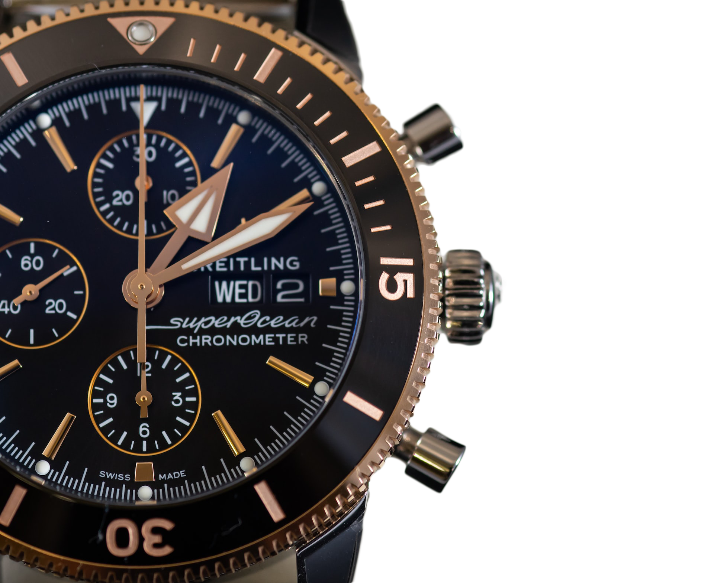

extraordinary finder
DAY-DATE
collection of prestigious, high-precision
timepieces
wide assortment of Classic and Professional
collection of prestigious, high-precision
timepieces
wide assortment of Classic and Professional